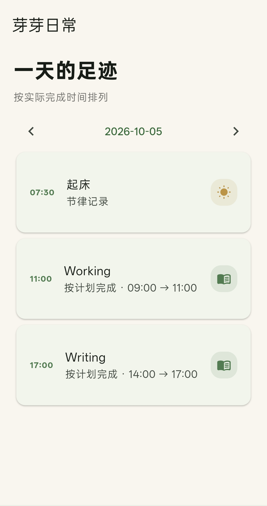
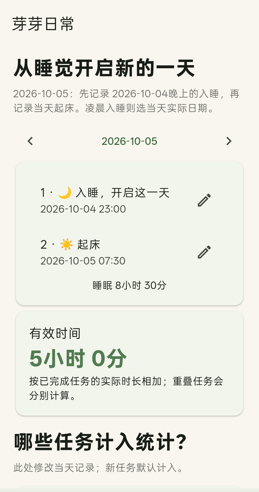
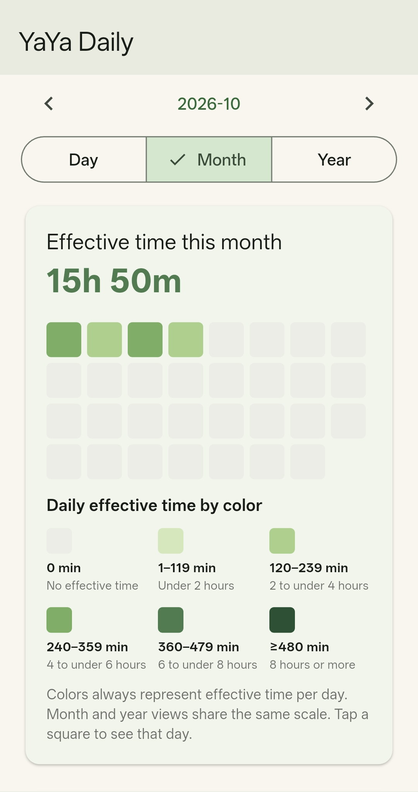
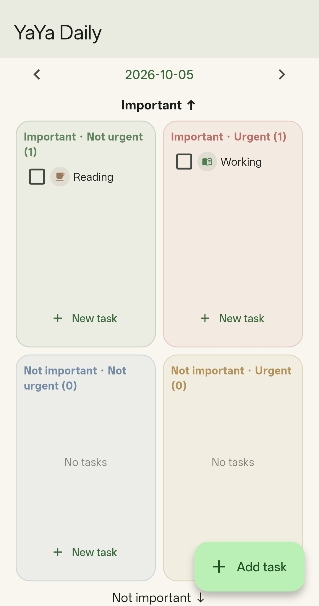
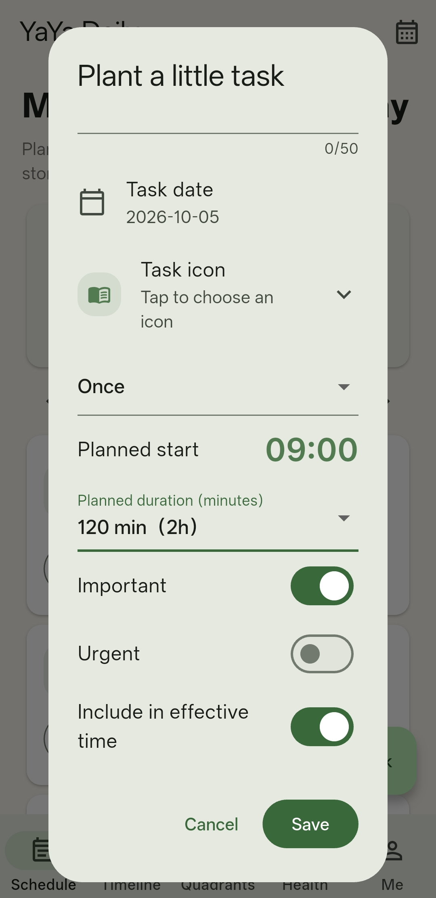

← Resources
Timeline
Sleeping Time
Statistics
Four Quadrants
New Task
Android App
YaYa Daily
芽芽日常 · Better to manage your time
Download
Version: 0.6.4
Click the button below → Releases on the right side of the GitHub page → Assets → Download the .apk file
Download on GitHubApp Preview
YaYa Daily (芽芽日常) is a simple time management app. Available in Chinese and English.
Screenshots
Schedules · Timeline · Four-Quadrant Tasks · Focus Time · Sleep Recording · Offline · Backup





About the app
YaYa Daily is a personal planner designed to help you organize your time and reflect on your daily habits.
- Plan your schedule with flexible day, 3-day, week, and month views.
- Start each day with sleep to build healthier routines and reduce procrastination.
- Keep every entry in sync across your calendar, timeline, and four-quadrant task board.
- Understand your current habits at a glance with summary charts and statistics.
- Use the app fully offline, with no login required.
- To update, install the new version over the existing app. Do not uninstall it first.